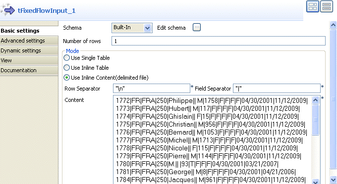
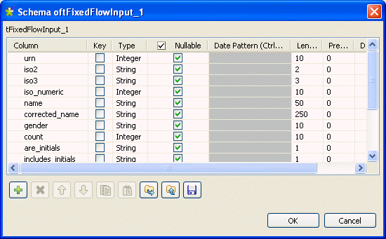
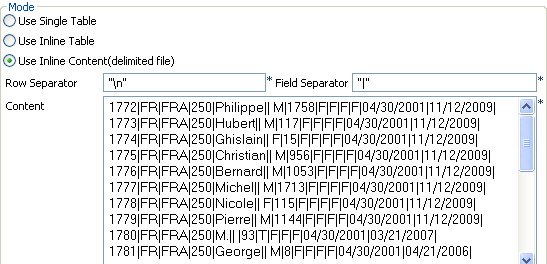
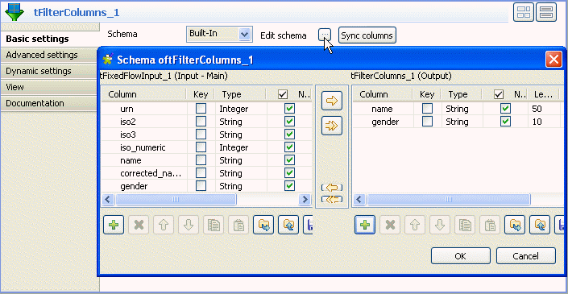
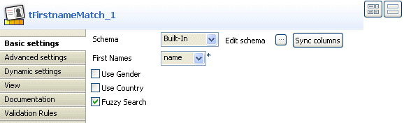
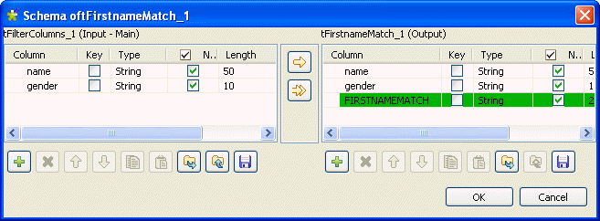

![[Warning]](../images/warning.png) | |
This component will be available in the Palette of the studio on the condition that you have subscribed to the right edition of Talend Enterprise Data Quality. |
|
Component family |
Data Quality | ||||
|
Function |
tFirstnameMatch compares the first name column from the input flow with first names in an embedded reference index and outputs the matching first names. | ||||
|
Purpose |
Helps ensuring the data quality of first names against a reference index in order to standardize data. | ||||
|
Basic settings |
Schema and Edit Schema |
A schema is a row description, i.e., it defines the number of fields that will be processed and passed on to the next component. The schema is either built-in or remote in the Repository. One read-only column, FIRSTNAMEMATCH is added to the output schema automatically. | |||
|
|
|
Built-in: The schema will be created and stored locally for this component only. Related topic: see Talend Enterprise Studio User Guide. | |||
|
|
|
Repository: The schema already exists and is stored in the Repository, hence can be reused in various projects and job designs. Related topic: see Talend Enterprise Studio User Guide. | |||
|
|
First Names |
Select the column that contains first names. | |||
|
|
Use Gender |
Optional parameter: select this check box and then from the list, select the column that contains the gender. This will optimize system performance and give more precise results.
| |||
|
|
Use Country |
Optional parameter: select this check box and then from the list, select the column that contains the country ISO 3166-1 alpha-3 codes. This will optimize system performance and give more precise results. | |||
|
|
Fuzzy Search |
Select this check box if you want to get the best match possible, including approximate matches. | |||
|
Advanced settings |
tStatCatcher Statistics |
Select this check box to gather the processing metadata at the Job level as well as at each component level. | |||
|
Usage |
This component is not startable and it requires input and output components. | ||||
|
Limitation/prerequisite |
The index used to standardize the first names is embedded in this component. For the time being, it is able to handle the Latin names. | ||||
This scenario describes a four-component Job aiming at matching the name column of an input flow with the reference index.
The output of this first name match is displayed in the FIRSTNAMEMATCH output column along with all other columns defined in the input schema of the tFirstnameMatch component.
To drop and link the components of interest, proceed as follows:
Drop the following components from the Palette to the design workspace: tFixedFlowInput, tFilterColumns, tFirstnameMatch and tLogRow.
Connect the first three components using Row > Main links.
Connect tFirstnameMatch to tLogRow using a Row > Output link.
To configure the input data, perform the following operations:
Double-click tFixedFlowInput to display the Basic settings view and define the component properties.
From the Schema list, set the schema type to Built-In and click the three-dot button next to Edit Schema. A dialog box displays.
Click the plus button to add as many lines as needed for the input schema you want to create from internal variables.
In this example, the input data flow is made of several columns including one for first names (name), two for country codes (iso2 and iso3) and one for gender (gender).
Click OK to close the dialog box.
The defined columns display in the Mode area of the component basic settings view.
In the Mode area, select the Use Inline Content (delimited file) option to display the corresponding view.
Set the row and field separators in the corresponding fields. You want to use these defined separators in your input flow.
In the Content area, type in the data for the input flow according to the schema you defined earlier.
To do this, you need to select the data columns of interest and then match them using tFirstnameMatch
Click the tFilterColumns component to display its Basic settings view and define the component properties.
The tFilterColumns component enables you to build the output schema based on the column names of the input schema.
Click the three-dot button next to Edit schema to display a dialog box where you can define the output schema.
Select the name and gender columns from the input schema and move them to the output schema.
Click OK to validate your changes and close the dialog box.
Click tFirstnameMatch to display the Basic settings view and define the component properties.
If required, click the three-dot button next to Edit schema to view the input and output schemas.
![[Note]](../images/note.png)
The output schema of this component is the same as the input schema plus one fixed column: FIRSTNAMEMATCH.
Click OK to close the dialog box.
From the First Names list, select the column that holds the first names, name in this example.
If required, select Use Gender or Use Country check box and then select from the list the column that contains the gender or country respectively. This will optimize system performance and will give more precise results.
If required, select the Fuzzy Search check box if you want to get the first-name best match possible, in case several matches are available.
To do this, simply click tLogRow to display the Basic settings view and define the component properties according to the display mode you prefer.
In the Mode area, select Table (print values in cells of a table).
Then save the Job and press F6 to execute it.
All the output columns including FIRSTNAMEMATCH are listed in the Run console. The FIRSTNAMEMATCH column outputs the best match possible of the first names.